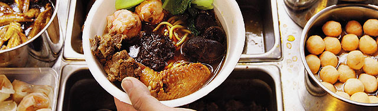

ABOUT US
Nood, a Cart Noodle Restaurant, which sells cooked noodles in soup with an assortment of toppings and styles. It is a culture from Hong Kong. In 1950s, many independent street vendors operated on roadsides in low-income districts by using vendors and sold large quantities noodles for a cheap price, so cart noodle is a style of noodles.
Therefore, we sell cart noodles in stores and allow customers to customise their own cart noodles. We also want to provide quick ordering service and delivery service. We create this website that has a convenience self ordering in stores, better understand on the menu and the ingredients, flexible food ordering and cart noodle customization and helpful commmenting method on rating and giving feedback on our food and service.
Let's try a different meal in our restaurants.
"Experience the cart noodle culture in store and provide the best customer service."
 CONTACT USHISTORY
In 1950s, Sam Wong was a independent street vendor operated on roadsides in Shau Kei Wan, a low-income district in Hong Kong. He used his vendor and sold large quantities noodles for a cheap price, which benefits the locals.
He starts his cart noodle restaurant since his twenties. In 1960s, Sam earned